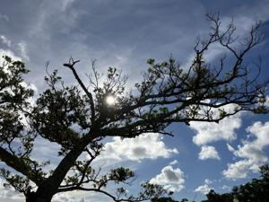
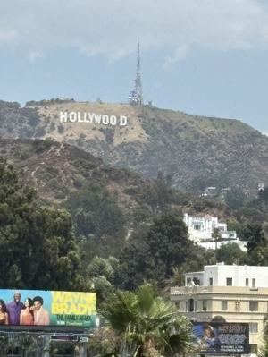
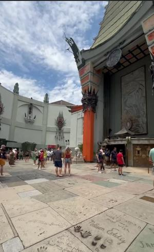
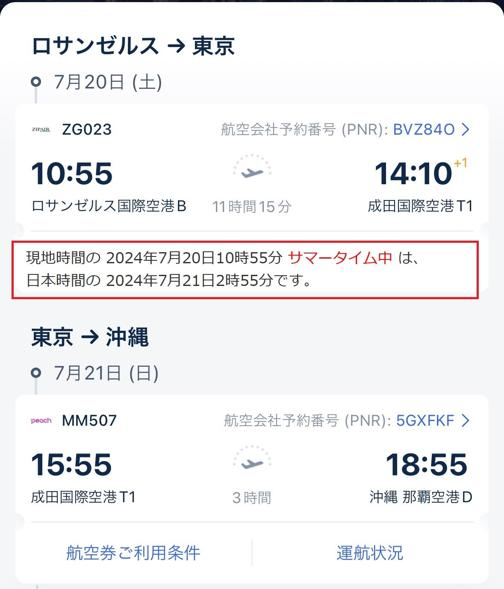
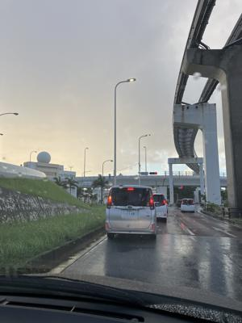

うるがいの話 ある日
最新: ハリウッド【うるがいの話 ある日】とは 一日だけのプログです
『うるがいの話』の最新一日だけのプログで、通信料が少なく経済的だ。カニの画像をクリックすると全ての日付が載る『うるがいの話』サイトを表示します
|
|
【うるがいの話】 うるがい(ｳﾙｶﾞｲ urugai)とは、『もずくがに』の名前でとても大きくなります。 |
|---|---|
|
|
【カミマヤーの話】 猫のことを方言でマヤーといいます。カミマヤー（kamimayaa）とは、神の猫のことです。 |
|
【たながぁの音楽】 たながぁ（ﾀﾅｶﾞｰ tanagaa）とは手長えびのことで、何種類かあり大きいのは車 エビぐらいになります。 |

|
【ぶながぁの話】 ぶながぁ(ﾌﾞﾅｶﾞｰ bunagaa)とは、赤い髪の毛、赤い身体、そして身長は１ｍ２０ｃｍ ぐらい、川の蟹を食べているの目撃された。場所は沖縄県国頭郡大宜味村のと ある村僕の隣近所に住んでいる爺さんから、聞いた話です。 |
|
|
【ギーマの話】 ギーマ(giima)とは、山原の里山に咲くスズランに似た、 花を付けます。実は食べられます、 気が付くと口の周りが紫になっています。 |
2024年07月22日 (月）ハリウッド
15:24

コドモから、土曜日の夜１０時（ロスアンゼルでは夕方１６時）にハリウッ
ドの写真がＬＩＮＥより送られてきた。いまから、空港へ移動するからと。
 
はて、大規模なシステム障害で混乱しているな予定通りに帰ってこれるかし
ら。事前にもらった帰りの便の予定を確認する。

ふーん、イマイチ時間がよくわかならない。で、調べた結果、日本時間の日
曜日の朝２時にロスアンゼルを飛び立って、成田には１４時１０分に到着と
それから、沖縄へ、年寄りにはキツイな。しかし、トランプさんの暗殺未遂
、大規模なシステム障害、バイデンさんの次期大統領撤退となにかとあった
日々だった。

那覇空港へ行くとき、小禄からにわか雨が降ってきた。子供たちを迎えるこ
ろには、雨はあがった。しかし、コドモのアパートに近づくと、また、にわ
か雨、降ろす頃にはかなり激しく降った。台風３号の影響なのだろうか、風
も少し強くなった。
３０歳になる前の頃、カルフォルニアへ業種の研修視察のようなものがある
けど、行く？と上司から言われたが断った。そしたら、担当業種に関係ない
オオミネさんが、代わりにいった。あの時、行けば良かったのかしら・・。
１５時０６分 ビットコインの総資産 ￥３０、７７２（↑４３８）